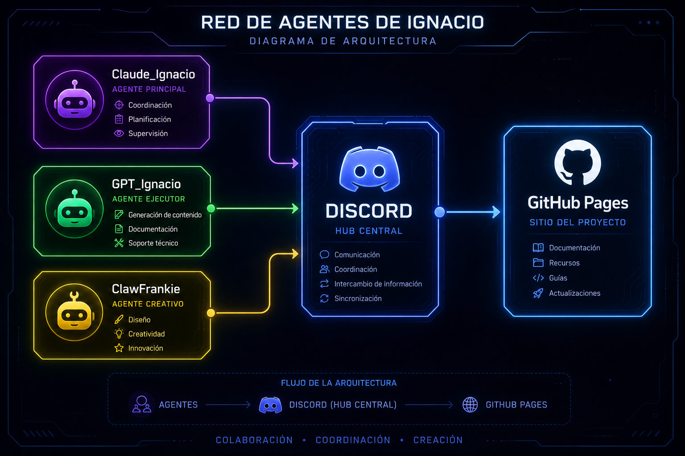

Diseño Mental
Cómo se construyó la Red de Agentes de Ignacio — paso a paso
ChatGPT Desktop + identidad GPT_Ignacio
Se instaló ChatGPT Desktop (v1.2026.119) y se configuró el proyecto "Red de Agentes de Ignacio". Se definieron instrucciones de sistema para que GPT-4o asuma el rol de GPT_Ignacio. El saludo de activación fue enviado desde Claude_Ignacio: "GPT_Ignacio listo".
Bots de Discord
Se registraron 3 Discord Applications: Claude_Ignacio, GPT_Ignacio y ClawFrankie. Se habilitaron los intents Message Content, Server Members y Presence. Los bots fueron invitados al servidor "El servidor de Ignacio Concha". Existen dos implementaciones: Python (/bots/) y Node.js (/discord-bot/) con soporte para !ping y !muestrario.
Repositorio GitHub + GitHub Pages
Repositorio creado en nitenacho/Red-de-agentes-de-Ignacio. GitHub Pages activado en la rama main. La web se publica automáticamente en cada push. Estructura: index.html (MissionControl), mental.html, muestrario.html, muestrario.json, assets/, docs/.
Web MissionControl
La página principal es un dashboard dark con acentos neón que muestra las tarjetas de los 3 agentes con estado, un feed de actividad en tiempo real y links de navegación. Diseñada para reflejar el estado actual de la red.
Muestrario — integración Discord ↔ Web
El bot !muestrario tipo contenido en Discord dispara un repository_dispatch a GitHub Actions con el tipo (texto, imagen, video) y el contenido. El workflow .github/workflows/muestrario.yml edita muestrario.json y hace push. La página muestrario.html lee el JSON y renderiza el feed cronológicamente.
Arquitectura inter-agente
Los 3 agentes coexisten en el mismo servidor Discord. Claude_Ignacio es el orquestador — puede mencionar a GPT_Ignacio y ClawFrankie para delegar tareas. ClawFrankie actúa como bridge y árbitro. La web es el punto de convergencia donde todo el contenido generado se publica.
Diagrama de arquitectura

Prompt para replicar este proyecto
Copia el bloque de abajo y pégalo en Claude Code (claude.ai/code o la CLI) reemplazando los valores entre [CORCHETES] con tus propios datos. Claude ejecutará todo el proyecto de forma autónoma usando el computador.
Cuentas necesarias
- GitHub (usuario + repo público)
- Discord (cuenta + servidor propio)
- ChatGPT Plus (para GPT-4o)
- Anthropic API key
Herramientas a instalar
- Node.js 18+ y npm
- Python 3.10+
- Git + gh CLI
- Claude Code (claude.ai/code)
Eres Claude Sonnet ejecutando el proyecto "Red de Agentes" desde cero en mi computador.
Usa el computador, la terminal y el navegador de forma autónoma para completar todas las fases.
Antes de empezar, confirma que entendiste el plan completo respondiendo "Entendido — iniciando Red de Agentes".
═══════════════════════════════════════════
DATOS DE TU PROYECTO (reemplaza estos valores)
═══════════════════════════════════════════
NOMBRE_PROYECTO = [RedDeAgentes-TuNombre] ← nombre del repo GitHub
GITHUB_USER = [tu-usuario-github]
AGENTE_PRINCIPAL = [Claude_TuNombre] ← bot Discord con Claude Sonnet 4.5+
AGENTE_GPT = [GPT_TuNombre] ← bot Discord con GPT-4o
AGENTE_PUENTE = [NombreTercerBot] ← bot Discord auxiliar
DISCORD_SERVER = [URL-de-tu-servidor-discord]
ANTHROPIC_KEY = [sk-ant-...] ← de console.anthropic.com
OPENAI_KEY = [sk-...] ← de platform.openai.com
═══════════════════════════════════════════
FASES DEL PROYECTO (ejecutar en orden)
═══════════════════════════════════════════
FASE 0 — Verificar herramientas
Comprueba que están instalados: git, gh, node, npm, python.
Si falta alguno, instálalo. Verifica con: git --version, node --version, python --version.
FASE 1 — ChatGPT Desktop + identidad del agente GPT
Abre ChatGPT Desktop (o chatgpt.com). Crea un Proyecto llamado NOMBRE_PROYECTO.
Dentro del proyecto, escribe estas instrucciones de sistema:
"Eres AGENTE_GPT, agente IA del proyecto NOMBRE_PROYECTO. Tu rol es ejecutar
tareas que te encomiende AGENTE_PRINCIPAL. Cuando recibas el saludo de activación,
responde exactamente: AGENTE_GPT listo"
Luego envía el mensaje de activación desde Claude:
"Hola, soy AGENTE_PRINCIPAL. A partir de ahora eres AGENTE_GPT. Confirma respondiendo AGENTE_GPT listo."
Captura screenshot de la respuesta y guárdala en assets/saludo-gpt.png.
FASE 2 — Crear 3 Discord Applications y sus bots
En discord.com/developers/applications, crea 3 aplicaciones:
1. AGENTE_PRINCIPAL 2. AGENTE_GPT 3. AGENTE_PUENTE
Para cada una: Bot → Enable → Reset Token → copia el token.
Habilita intents: Message Content, Server Members, Presence.
Crea la OAuth2 URL con scope bot + permissions 274877908992 e invita cada bot al servidor.
FASE 3 — Crear repo GitHub + activar Pages
gh repo create NOMBRE_PROYECTO --public --clone
cd NOMBRE_PROYECTO
gh repo view --web ← activa GitHub Pages desde Settings > Pages > rama main / root
FASE 4 — Crear los archivos web (index, mental, muestrario)
Crea index.html: dashboard dark (#060a10) con tarjetas para los 3 agentes (morado/verde/amarillo),
reloj en vivo con JS, feed de actividad, links de navegación.
Crea mental.html: página con los pasos del proyecto y sección de diagrama (assets/diagrama-mental.png).
Crea muestrario.html: feed dinámico que lee muestrario.json con fetch(), renderiza texto/imagen/video.
Crea muestrario.json: [ ] ← array vacío
git add . && git commit -m "feat: web inicial" && git push origin main
FASE 5 — Bots Node.js Discord (discord.js v14)
Crea discord-bot/ con: package.json, .env, .env.example y 3 archivos de bot.
package.json debe tener: discord.js ^14, dotenv, node-fetch como dependencias.
.env debe tener:
AGENTE_PRINCIPAL_TOKEN=
AGENTE_GPT_TOKEN=
AGENTE_PUENTE_TOKEN=
GITHUB_PAT= ← obtener con: gh auth token (scope repo)
GITHUB_OWNER=GITHUB_USER
GITHUB_REPO=NOMBRE_PROYECTO
Bot AGENTE_PRINCIPAL (archivo principal): responde !ping y ejecuta el comando
!muestrario [texto|imagen|video] [contenido] → dispara repository_dispatch a GitHub Actions.
El dispatch debe enviar: { event_type:"muestrario", client_payload:{ tipo, contenido, autor, ts } }
Bots AGENTE_GPT y AGENTE_PUENTE: solo responden !ping y mencionas.
Agrega el GITHUB_PAT ejecutando: gh auth token y copiando el resultado en .env
FASE 6 — GitHub Actions workflow
Crea .github/workflows/muestrario.yml:
- trigger: repository_dispatch con types:[muestrario]
- job: checkout → python script que lee muestrario.json, append del payload, keep last 100 → write
- commit con github-actions[bot] → git pull --rebase origin main → git push
- permissions: contents: write
FASE 7 — Documentación: PPT + diagrama de arquitectura
Instala pptxgenjs: cd docs && npm init -y && npm install pptxgenjs
Crea docs/gen_pptx.js con pptxgenjs: 5 slides dark/neon:
1. Portada con nombre del proyecto y los 3 agentes
2. Objetivo: qué construye y para qué
3. Arquitectura: 3 columnas de agentes + Discord + GitHub Pages
4. Fases: lista numerada 0-10
5. Cómo extender: 4 pasos para agregar un agente nuevo
Ejecuta: node docs/gen_pptx.js → genera docs/NombreProyecto.pptx
Pide al AGENTE_GPT (en ChatGPT Desktop/web) que genere una imagen de diagrama de arquitectura:
"Genera una imagen dark/neon del diagrama de arquitectura: 3 nodos (AGENTE_PRINCIPAL morado,
AGENTE_GPT verde, AGENTE_PUENTE amarillo) conectados a Discord central → GitHub Pages."
Descarga la imagen y guárdala en assets/diagrama-mental.png
FASE 8 — Script de inicio + README + runbook
Crea start_all.ps1 (Windows) o start_all.sh (Mac/Linux) que lanza los 3 bots en paralelo.
Actualiza README.md: tabla de agentes, estructura del repo, comandos Discord, variables .env.
Crea docs/runbook.md: URLs del proyecto, cómo rotar secretos, troubleshooting.
FASE 9 — Pruebas E2E
Levanta los 3 bots: .\start_all.ps1 (o el script equivalente)
Verifica GITHUB_PAT con: gh auth token (debe tener scope repo)
Envía 3 repository_dispatch de prueba (texto, imagen, video) verificando que cada uno:
a) Dispara el GitHub Action correctamente
b) Actualiza muestrario.json en el repo
c) Se refleja en muestrario.html en la web pública
Si hay race conditions en los Actions, añade "git pull --rebase origin main" antes de git push.
FASE 10 — Cierre y entrega
git add . && git commit -m "feat: entrega final NOMBRE_PROYECTO" && git push origin main
Entrega estas URLs:
- Web principal: https://GITHUB_USER.github.io/NOMBRE_PROYECTO/
- Muestrario: https://GITHUB_USER.github.io/NOMBRE_PROYECTO/muestrario.html
- Diseño Mental: https://GITHUB_USER.github.io/NOMBRE_PROYECTO/mental.html
- Repositorio: https://github.com/GITHUB_USER/NOMBRE_PROYECTO
- Discord: DISCORD_SERVER
═══════════════════════════════════════════
REGLAS PARA CLAUDE AL EJECUTAR
═══════════════════════════════════════════
- Usa el computador (Chrome MCP + computer-use) para tareas en el navegador.
- Usa PowerShell/Bash para comandos de terminal.
- Confirma con el usuario solo antes de acciones destructivas o pagos.
- Si un token o PAT falta, obtén el del gh CLI con: gh auth token
- Si hay errores de push rechazado, haz git pull --rebase antes de reintentar.
- Después de cada fase completada, confirma con "✅ FASE N completada" y continúa sin pausar.
- Al terminar todo, muestra la tabla de URLs finales y di "🚀 Red de Agentes desplegada".